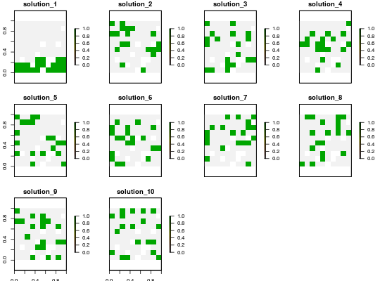

Generate a portfolio of solutions by randomly reordering the data prior to #' attempting to solve the problem.
add_shuffle_portfolio(x, number_solutions = 10L, threads = 1L, remove_duplicates = TRUE)
| x |
|
|---|---|
| number_solutions |
|
| threads |
|
| remove_duplicates |
|
This strategy for generating a portfolio of solutions often results in different solutions, depending on optimality gap, but may return duplicate solutions. In general, this strategy is most effective when problems are quick to solve and multiple threads are available for solving each problem separately.
# load data data(sim_pu_raster, sim_features) # create problem p <- problem(sim_pu_raster, sim_features) %>% add_min_set_objective() %>% add_relative_targets(0.2) %>% add_shuffle_portfolio(10, remove_duplicates = FALSE) %>% add_default_solver(gap = 0.2, verbose = FALSE) # solve problem and generate 10 solutions within 20 % of optimality s <- solve(p)#> Optimize a model with 5 rows, 90 columns and 450 nonzeros #> Variable types: 0 continuous, 90 integer (90 binary) #> Coefficient statistics: #> Matrix range [2e-01, 9e-01] #> Objective range [2e+02, 2e+02] #> Bounds range [1e+00, 1e+00] #> RHS range [6e+00, 1e+01] #> Found heuristic solution: objective 4135.27 #> Presolve time: 0.00s #> Presolved: 5 rows, 90 columns, 450 nonzeros #> Variable types: 0 continuous, 90 integer (90 binary) #> Presolved: 5 rows, 90 columns, 450 nonzeros #> #> #> Root relaxation: objective 3.490348e+03, 17 iterations, 0.00 seconds #> #> Nodes | Current Node | Objective Bounds | Work #> Expl Unexpl | Obj Depth IntInf | Incumbent BestBd Gap | It/Node Time #> #> 0 0 3490.34813 0 4 4135.27447 3490.34813 15.6% - 0s #> #> Explored 1 nodes (17 simplex iterations) in 0.00 seconds #> Thread count was 1 (of 4 available processors) #> #> Solution count 1: 4135.27 #> #> Optimal solution found (tolerance 2.00e-01) #> Best objective 4.135274467349e+03, best bound 3.490348127696e+03, gap 15.5957% #> Optimize a model with 5 rows, 90 columns and 450 nonzeros #> Variable types: 0 continuous, 90 integer (90 binary) #> Coefficient statistics: #> Matrix range [2e-01, 9e-01] #> Objective range [2e+02, 2e+02] #> Bounds range [1e+00, 1e+00] #> RHS range [6e+00, 1e+01] #> Found heuristic solution: objective 3920.88 #> Presolve time: 0.00s #> Presolved: 5 rows, 90 columns, 450 nonzeros #> Variable types: 0 continuous, 90 integer (90 binary) #> Presolved: 5 rows, 90 columns, 450 nonzeros #> #> #> Root relaxation: objective 3.490348e+03, 17 iterations, 0.00 seconds #> #> Nodes | Current Node | Objective Bounds | Work #> Expl Unexpl | Obj Depth IntInf | Incumbent BestBd Gap | It/Node Time #> #> 0 0 3490.34813 0 4 3920.88435 3490.34813 11.0% - 0s #> #> Explored 1 nodes (17 simplex iterations) in 0.00 seconds #> Thread count was 1 (of 4 available processors) #> #> Solution count 1: 3920.88 #> #> Optimal solution found (tolerance 2.00e-01) #> Best objective 3.920884353323e+03, best bound 3.490348127696e+03, gap 10.9806% #> Optimize a model with 5 rows, 90 columns and 450 nonzeros #> Variable types: 0 continuous, 90 integer (90 binary) #> Coefficient statistics: #> Matrix range [2e-01, 9e-01] #> Objective range [2e+02, 2e+02] #> Bounds range [1e+00, 1e+00] #> RHS range [6e+00, 1e+01] #> Found heuristic solution: objective 3886.47 #> Presolve time: 0.00s #> Presolved: 5 rows, 90 columns, 450 nonzeros #> Variable types: 0 continuous, 90 integer (90 binary) #> Presolved: 5 rows, 90 columns, 450 nonzeros #> #> #> Root relaxation: objective 3.490348e+03, 17 iterations, 0.00 seconds #> #> Nodes | Current Node | Objective Bounds | Work #> Expl Unexpl | Obj Depth IntInf | Incumbent BestBd Gap | It/Node Time #> #> 0 0 3490.34813 0 4 3886.46533 3490.34813 10.2% - 0s #> #> Explored 1 nodes (17 simplex iterations) in 0.00 seconds #> Thread count was 1 (of 4 available processors) #> #> Solution count 1: 3886.47 #> #> Optimal solution found (tolerance 2.00e-01) #> Best objective 3.886465332976e+03, best bound 3.490348127696e+03, gap 10.1922% #> Optimize a model with 5 rows, 90 columns and 450 nonzeros #> Variable types: 0 continuous, 90 integer (90 binary) #> Coefficient statistics: #> Matrix range [2e-01, 9e-01] #> Objective range [2e+02, 2e+02] #> Bounds range [1e+00, 1e+00] #> RHS range [6e+00, 1e+01] #> Found heuristic solution: objective 3904.11 #> Presolve time: 0.00s #> Presolved: 5 rows, 90 columns, 450 nonzeros #> Variable types: 0 continuous, 90 integer (90 binary) #> Presolved: 5 rows, 90 columns, 450 nonzeros #> #> #> Root relaxation: objective 3.490348e+03, 17 iterations, 0.00 seconds #> #> Nodes | Current Node | Objective Bounds | Work #> Expl Unexpl | Obj Depth IntInf | Incumbent BestBd Gap | It/Node Time #> #> 0 0 3490.34813 0 4 3904.10897 3490.34813 10.6% - 0s #> #> Explored 1 nodes (17 simplex iterations) in 0.01 seconds #> Thread count was 1 (of 4 available processors) #> #> Solution count 1: 3904.11 #> #> Optimal solution found (tolerance 2.00e-01) #> Best objective 3.904108971657e+03, best bound 3.490348127696e+03, gap 10.5981% #> Optimize a model with 5 rows, 90 columns and 450 nonzeros #> Variable types: 0 continuous, 90 integer (90 binary) #> Coefficient statistics: #> Matrix range [2e-01, 9e-01] #> Objective range [2e+02, 2e+02] #> Bounds range [1e+00, 1e+00] #> RHS range [6e+00, 1e+01] #> Found heuristic solution: objective 3902.69 #> Presolve time: 0.00s #> Presolved: 5 rows, 90 columns, 450 nonzeros #> Variable types: 0 continuous, 90 integer (90 binary) #> Presolved: 5 rows, 90 columns, 450 nonzeros #> #> #> Root relaxation: objective 3.490348e+03, 17 iterations, 0.00 seconds #> #> Nodes | Current Node | Objective Bounds | Work #> Expl Unexpl | Obj Depth IntInf | Incumbent BestBd Gap | It/Node Time #> #> 0 0 3490.34813 0 4 3902.69260 3490.34813 10.6% - 0s #> #> Explored 1 nodes (17 simplex iterations) in 0.00 seconds #> Thread count was 1 (of 4 available processors) #> #> Solution count 1: 3902.69 #> #> Optimal solution found (tolerance 2.00e-01) #> Best objective 3.902692599187e+03, best bound 3.490348127696e+03, gap 10.5656% #> Optimize a model with 5 rows, 90 columns and 450 nonzeros #> Variable types: 0 continuous, 90 integer (90 binary) #> Coefficient statistics: #> Matrix range [2e-01, 9e-01] #> Objective range [2e+02, 2e+02] #> Bounds range [1e+00, 1e+00] #> RHS range [6e+00, 1e+01] #> Found heuristic solution: objective 4110.89 #> Presolve time: 0.00s #> Presolved: 5 rows, 90 columns, 450 nonzeros #> Variable types: 0 continuous, 90 integer (90 binary) #> Presolved: 5 rows, 90 columns, 450 nonzeros #> #> #> Root relaxation: objective 3.490348e+03, 17 iterations, 0.00 seconds #> #> Nodes | Current Node | Objective Bounds | Work #> Expl Unexpl | Obj Depth IntInf | Incumbent BestBd Gap | It/Node Time #> #> 0 0 3490.34813 0 4 4110.89239 3490.34813 15.1% - 0s #> #> Explored 1 nodes (17 simplex iterations) in 0.00 seconds #> Thread count was 1 (of 4 available processors) #> #> Solution count 1: 4110.89 #> #> Optimal solution found (tolerance 2.00e-01) #> Best objective 4.110892388075e+03, best bound 3.490348127696e+03, gap 15.0951% #> Optimize a model with 5 rows, 90 columns and 450 nonzeros #> Variable types: 0 continuous, 90 integer (90 binary) #> Coefficient statistics: #> Matrix range [2e-01, 9e-01] #> Objective range [2e+02, 2e+02] #> Bounds range [1e+00, 1e+00] #> RHS range [6e+00, 1e+01] #> Found heuristic solution: objective 4131.05 #> Presolve time: 0.00s #> Presolved: 5 rows, 90 columns, 450 nonzeros #> Variable types: 0 continuous, 90 integer (90 binary) #> Presolved: 5 rows, 90 columns, 450 nonzeros #> #> #> Root relaxation: objective 3.490348e+03, 17 iterations, 0.00 seconds #> #> Nodes | Current Node | Objective Bounds | Work #> Expl Unexpl | Obj Depth IntInf | Incumbent BestBd Gap | It/Node Time #> #> 0 0 3490.34813 0 4 4131.04921 3490.34813 15.5% - 0s #> #> Explored 1 nodes (17 simplex iterations) in 0.00 seconds #> Thread count was 1 (of 4 available processors) #> #> Solution count 1: 4131.05 #> #> Optimal solution found (tolerance 2.00e-01) #> Best objective 4.131049214192e+03, best bound 3.490348127696e+03, gap 15.5094% #> Optimize a model with 5 rows, 90 columns and 450 nonzeros #> Variable types: 0 continuous, 90 integer (90 binary) #> Coefficient statistics: #> Matrix range [2e-01, 9e-01] #> Objective range [2e+02, 2e+02] #> Bounds range [1e+00, 1e+00] #> RHS range [6e+00, 1e+01] #> Found heuristic solution: objective 3925.7 #> Presolve time: 0.00s #> Presolved: 5 rows, 90 columns, 450 nonzeros #> Variable types: 0 continuous, 90 integer (90 binary) #> Presolved: 5 rows, 90 columns, 450 nonzeros #> #> #> Root relaxation: objective 3.490348e+03, 17 iterations, 0.00 seconds #> #> Nodes | Current Node | Objective Bounds | Work #> Expl Unexpl | Obj Depth IntInf | Incumbent BestBd Gap | It/Node Time #> #> 0 0 3490.34813 0 4 3925.70394 3490.34813 11.1% - 0s #> #> Explored 1 nodes (17 simplex iterations) in 0.01 seconds #> Thread count was 1 (of 4 available processors) #> #> Solution count 1: 3925.7 #> #> Optimal solution found (tolerance 2.00e-01) #> Best objective 3.925703936226e+03, best bound 3.490348127696e+03, gap 11.0899% #> Optimize a model with 5 rows, 90 columns and 450 nonzeros #> Variable types: 0 continuous, 90 integer (90 binary) #> Coefficient statistics: #> Matrix range [2e-01, 9e-01] #> Objective range [2e+02, 2e+02] #> Bounds range [1e+00, 1e+00] #> RHS range [6e+00, 1e+01] #> Found heuristic solution: objective 3905.93 #> Presolve time: 0.00s #> Presolved: 5 rows, 90 columns, 450 nonzeros #> Variable types: 0 continuous, 90 integer (90 binary) #> Presolved: 5 rows, 90 columns, 450 nonzeros #> #> #> Root relaxation: objective 3.490348e+03, 17 iterations, 0.00 seconds #> #> Nodes | Current Node | Objective Bounds | Work #> Expl Unexpl | Obj Depth IntInf | Incumbent BestBd Gap | It/Node Time #> #> 0 0 3490.34813 0 4 3905.92526 3490.34813 10.6% - 0s #> #> Explored 1 nodes (17 simplex iterations) in 0.01 seconds #> Thread count was 1 (of 4 available processors) #> #> Solution count 1: 3905.93 #> #> Optimal solution found (tolerance 2.00e-01) #> Best objective 3.905925259460e+03, best bound 3.490348127696e+03, gap 10.6397% #> Optimize a model with 5 rows, 90 columns and 450 nonzeros #> Variable types: 0 continuous, 90 integer (90 binary) #> Coefficient statistics: #> Matrix range [2e-01, 9e-01] #> Objective range [2e+02, 2e+02] #> Bounds range [1e+00, 1e+00] #> RHS range [6e+00, 1e+01] #> Found heuristic solution: objective 3904.93 #> Presolve time: 0.00s #> Presolved: 5 rows, 90 columns, 450 nonzeros #> Variable types: 0 continuous, 90 integer (90 binary) #> Presolved: 5 rows, 90 columns, 450 nonzeros #> #> #> Root relaxation: objective 3.490348e+03, 17 iterations, 0.00 seconds #> #> Nodes | Current Node | Objective Bounds | Work #> Expl Unexpl | Obj Depth IntInf | Incumbent BestBd Gap | It/Node Time #> #> 0 0 3490.34813 0 4 3904.92598 3490.34813 10.6% - 0s #> #> Explored 1 nodes (17 simplex iterations) in 0.00 seconds #> Thread count was 1 (of 4 available processors) #> #> Solution count 1: 3904.93 #> #> Optimal solution found (tolerance 2.00e-01) #> Best objective 3.904925981764e+03, best bound 3.490348127696e+03, gap 10.6168%# plot solution plot(s, axes = FALSE, box = FALSE)